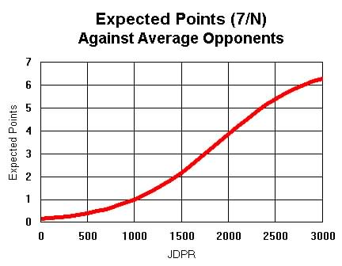

When a game is completed and its summary is sent to the Archive database, the necessary information is extracted to adjust the PbEM Rankings of all the players, according to the results of the game. There are several factors which determine how much each player's rating goes up or down, if at all. Each player begins his Diplomacy life with a rating of 1000, which represents that of an average player.
At its most basic level, the movement of a player's rating is based on four numbers: the number of raw points he won in the game (S), the number of points he was expected to take from that game (X), his past experience (E), and the "value" of the game (V). His rating goes up by E * V * (S - X), If he won no points, then this value will be negative and his rating will go down.
S is the easiest number to calculate. If the game has M players to start, then the winner would get M points. If it's an N-way draw, then each member of the draw gets M/N points. Easy enough.
X is more complicated, because it depends on how strong a player was and how strong his opponents were. At the beginning of the game, each player has a rating Ri, where i = 1..M (there are M powers in the game, and we'll assume there are no replacements to deal with). The strength of the game is just the sum of the strength of all its players, which is measured e ^ (Ri / 500). Since the average player (and all new players) has a rating of 1000, the average player strength is e^2, or 7.39, and the average strength of a standard game is 7 times this, or 51.7 (if you'd like to calculate the average rating of a player in the game, divide the game strength by the number of powers -- 7, for standard Diplomacy -- then take the natural log and multiply by 500) . A single player's expected score for a game is just their ratio of the total strength of the game; ie, X = M * [e ^ (R / 500)] / sum[e ^ (Ri / 500)]. The graph below shows how X varies with JDPR in a standard Diplomacy game -- "average opponents" means that the other six players have JDPR's of 1000).

So if the ratings for seven players in a standard game are 800, 900, 1000, 1000, 1100, 1200, and 1500, then their strengths would be 4.95, 6.05, 7.39, 7.39, 9.03, 11.02, and 20.09, the game's strength would be 65.92, and their expected scores would be 0.53, 0.64, 0.78, 0.78, 0.96, 1.17, and 2.14 -- which adds up to 7.00, the number of points awarded in a standard game. The average rating is 500 * ln (65.92 / 7), or 1121. It's not an arithmetic mean, but rather a sort of exponential average, which is more appropriate for this system, which is based heavily on exponential math.
The "value" of the game, V, is the term that allows us to compare games of different variants, different press types, and different deadline lengths in a single Diplomacy rating. The larger V is, the more the outcome of the game will effect a player's rating -- positively or negatively.
V is just 7.5 * A * P * R, where A is the adjustment due to the variant, P is the adjustment due to press, and R is the adjustment due to the ratio of "fully rated players" in the game.
A is [s * w * 14] / [(s+2) * M * 34], where s is the supply center count for the variant, w is the number of centers required for the win, and M is the number of powers in the variant. Note that for the standard game (s=34, w=18, and M=7), A is exactly 1.0. The maximum value A can take for the purposes of calculating V is also 1.0. Note also that this equation simplifies down to A = 0.412 * s * w / [(s+2) * M].
P is 1.0 for a game with partial press of any kind. If only broadcasts are allowed, then P = 0.8. If no press is used at all, the value is 0.5. If the game is Real Time Diplomacy, then P = 0.3, regardless of the press settings.
R is (1 + f/M), where f is the number of M powers who have completed at least seven games in the Archive database that were used in the JDPR system, and are thus fully rated (for the definition of "fully rated", see the description of E, below). So R ranged between 1.0 (a game with no fully rated players), to 2.0 (a game with seven fully rated players).
E, a player's experience, is determined solely by the number of games, G, in the Archive database that were used in the JDPR rating system which had an effect on the player's rating. Any irregular games that don't count toward the calcualtion of JDPR, as well as any mercy positions that the player assumed, aren't counted towards G for a player. If the number is greater than 7, then he's "fully rated" (as mentioned in the description of R, above). Also, E = 1 + [40 / (10+G)], where G is the number of games. If G is zero (ie, the player is new to Judge Diplomacy), then E is 5.0 and any adjustment to his beginning rating is multiplied by the maximum, 5.0. As he plays more games, E starts to get smaller and smaller. After he's played 30 games, E is only 2.0, and the adjustments to his ranking are less severe (one would assume that his ranking is a pretty accurate indication of his ability by this time). After 90 games, E is only 1.4; it eventually converges to 1.0.
This all seems overly complicated, but I have a computer do all the number crunching, of course. All I need as inputs are the initial ratings and games played for each player, the variant type and press settings for the game, and the result. Here's an example:
Standard game, W--- press, 3-way AET draw:
A = 0.8
P = 1.0
R = 1 + 4/7 = 1.57
V = 7.5 * A * P * R = 9.42
Game strength = sum of strengths = 65.92
Delta = E*V*(S-X)
Rating Games Stren. E X S Delta New Rating
Austria 800 11 4.95 2.90 0.53 2.33 +49 849
England 900 4 6.05 3.86 0.64 2.33 +61 961
France 1000 0 7.39 5.00 0.78 0 -37 963
Germany 1000 12 7.39 2.82 0.78 0 -21 979
Italy 1100 3 9.03 4.08 0.96 0 -37 1063
Russia 1200 9 11.02 3.11 1.17 0 -34 1166
Turkey 1500 26 20.09 2.11 2.14 2.33 +4 1504
"But Doug, what if there's a replacement player?"

[ The Zine |
Online Resources |
Showcase |
Postal |
Email |
Face to Face
]
The Diplomatic Pouch is brought to you by
the DP Council.
The Email Diplomacy section is maintained by Ted Miller.